Palau (Apr.7-13) 運用記
OP. JA1RJU “Kazu”Ogasawara
パラオ・レンタルシャック設営計画
Palau (Apr.7-13) 運用記
OP. JA1RJU “Kazu”Ogasawara
|
2000年4月7日〜13日の日程でT88・パラオ(Palau)共和国を訪問、T88JUを運用する機会を得た。 このパラオ行きは当地への「レンタルシャック」設置が主目的で時間的に余裕が出来れば運用も...と言う短い日程だった。 今回の同行者はアンテナ建設担当でEDC社のJA8CCL(現JA1AHS)・木下さんと機材担当の八重洲無線(YAESU)のJN1WTK・黒崎さん。 レンタルシャックの設置はYAESU(後のバーテックスタンダード)の協力を得て、サイパン・レンタルシャック(1997年設置)に続く2ヶ所目の建設だった。 シャックの設置場所はパラオの最高級ホテルとして知られている「パラオ・パシフィツク・リゾート(Palau Pacific Resort=PPR)」。 パラオ国際空港はパラオ諸島で一番大きなバベルタオブ島の最南端にあり、この島の南隣に位地するコロール島のその南側に接するアラカベサン(Arakabesang I)島にホテルはある。 |
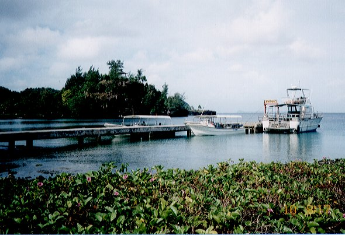
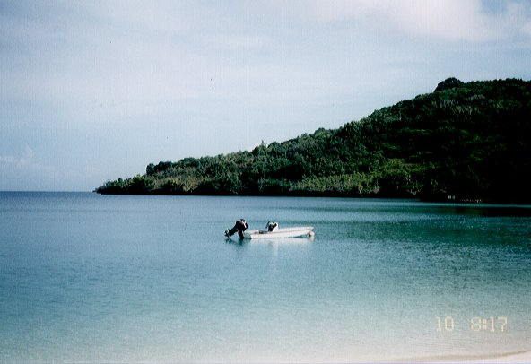
|
4月7日の夜8時30分に成田空港を出発、途中Guam島で乗り換え、約12時間後の翌8日の早朝(現地時間=日本時間)パラオ到着という"近くて遠い"島国だった。
到着日にはさっそくアンテナ工事に取り掛かる予定だったが、空港での機材受け取り手続きに手違いがあり、受け取りは翌日回しとなってしまった。
このため初日は終日無駄な時間を過ごすことになってしまった。 アンテナタワーや機材の一部は前もって送ってあったため、既に現地の皆さんの協力でホテルの裏山の頂上付近に設置されていが、 アンテナが無くては何も出来ない。明日の「アンテナマスト」の通関を待つだけ。 |
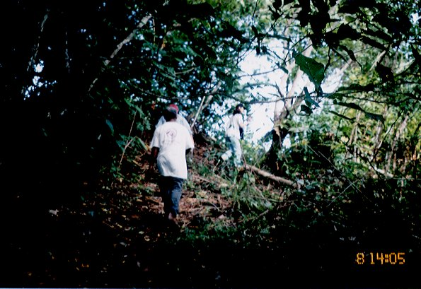
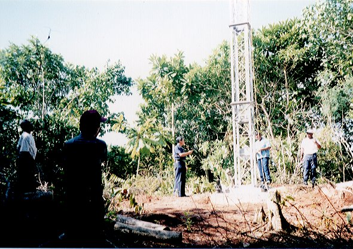
|
翌日の朝、空港から通関手続きの終わったマストを運び、さっそくアンテナの設置工事が始まった。
タワーはホテルの裏山に設置されていて、ホテルから"昼なお暗い"ジャングルを10分ほど登った頂上付近のジャングルの樹木を切り開いた場所。 タワーの周囲の潅木を切り開いた狭い空き地にHF帯、50MHz帯のアンテナを並べて組み立てた。 定期的に襲ってくる南国特有のスコールで作業もそのつど休止。赤土の山頂は泥んこ状態となり作業する足元もおぼつかない。 南国の照りつける太陽の下で、暑さにふらつきながらのアンテナの組み立てはかなり辛いものだった。 午後4時頃には何とかHF帯のForce12(20-10m ＆ WARC Band)の7ELと50MHzの8ELが上がった。 暑さと慣れない山中での作業に疲れ果てて全員一旦ホテルまで引き上げ休憩。 |
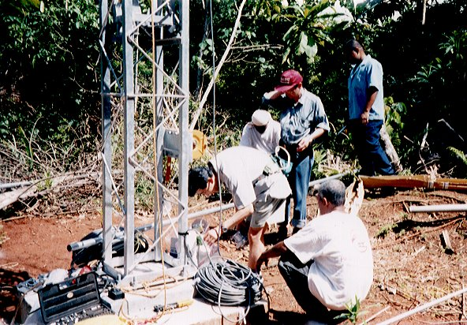
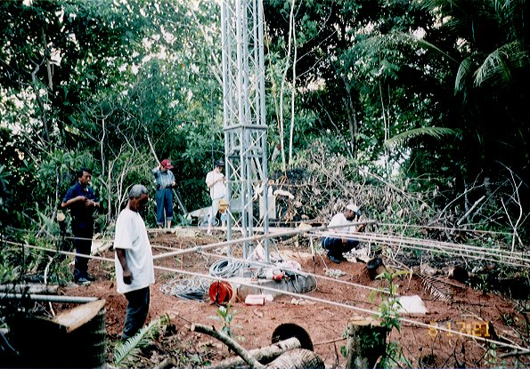
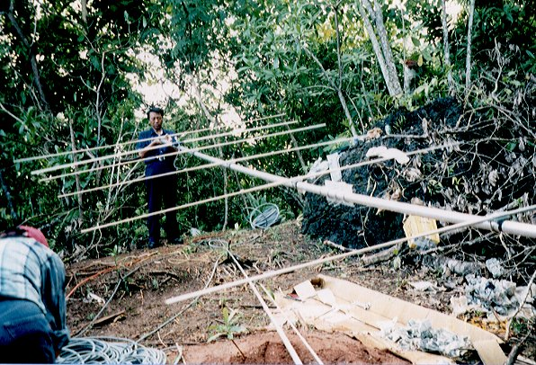
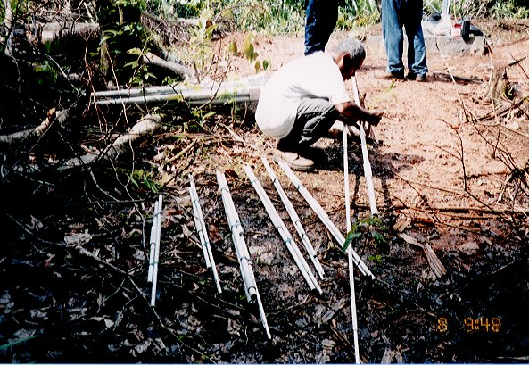
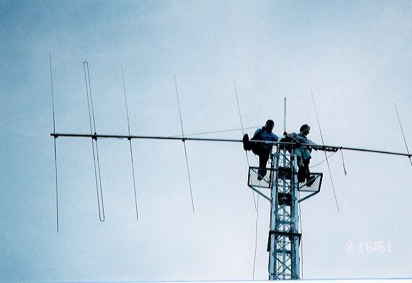
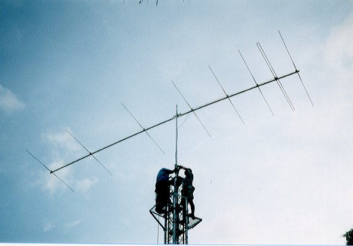
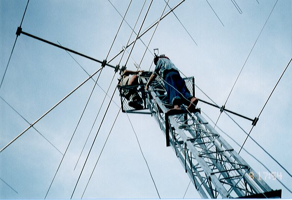
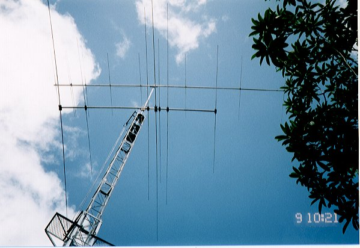
|
休憩中にRIGにアンテナを接続して動作確認をしてみたら...どうもHF帯のビームの切れが良くない！？。
ホテルの窓からアンテナを眺めると、エレメントの取り付けが"遠目"にも不自然な感じ！。 さっそく山頂まで戻って確認したところリフレクターの一本が、ディレクターと入れ替わっているのが判明！。 Force12のアンテナの組み立てに慣れない"誰か"が取り付けミスをしたらしい。 なんとか日没前に作業を終了、今度は正常動作で一件落着。 タワー下のジャンクション・ボックスに纏められた同軸ケーブルやローテーターなどのコントロールケーブルは、 林の中を直線で100mほど引き込みホテルの軒下に集められた。 そこからケーブル類はホテル既設の配管を通して客室の"押入れ"まで引き込むことが出来た。 アンテナから客室までの距離が長いこと、ホテル内を引き回しているケーブルが細いことなどで"ロス"が若干心配されたが、 これは今後の課題となるところ。ホテルの最上級の客室を無線室として開放して頂くのであまり贅沢は言えない。 立ち上げ時の機材は50MHzを含むオールバンド機のFT-920とVL-1000の1KWリニアーアンプ。 160m〜6mのオールバンドでの送信が可能になった。(注：後にHF帯はFT-1000MK5がHF機として追加された）。 13日の深夜にホテルを出発するまで50MHzを含むオールバンドでT88JUを運用出来た。 50MHzでは夕方からのJAのパイルを楽しませて頂き、午前中にはVK(オーストラリア)からのパイルに驚いたり、 短い時間だったが初めてのパラオからの運用を堪能出来た。[T88JU/JA1RJU・小笠原一夫] |
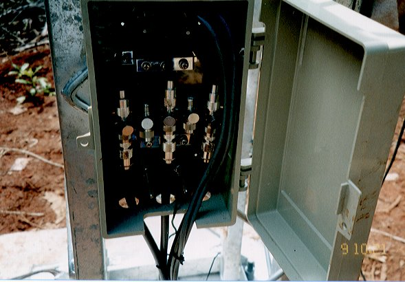
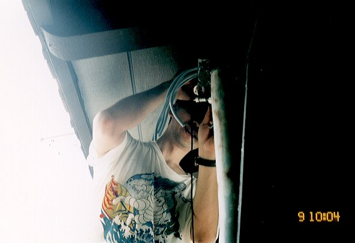
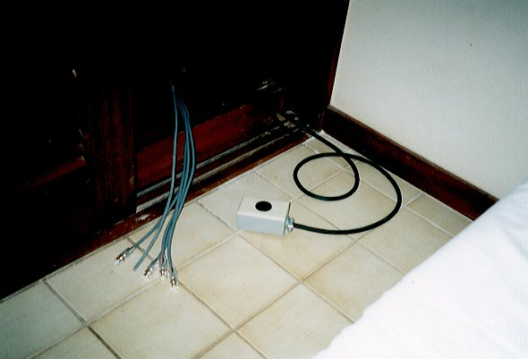
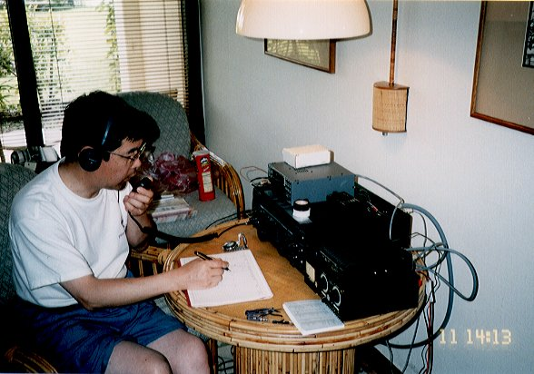
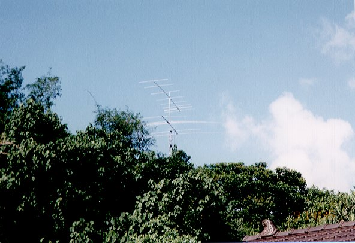
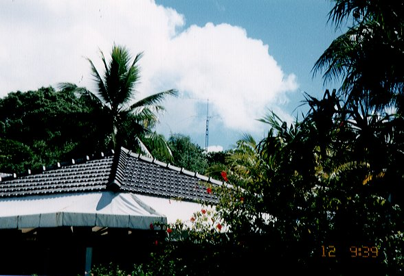
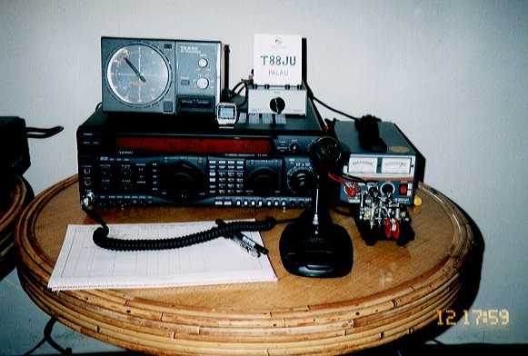
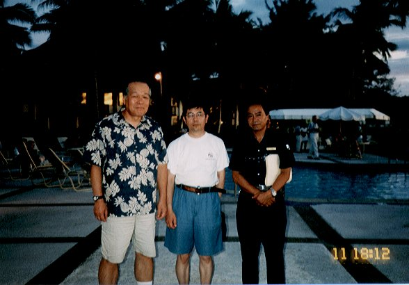
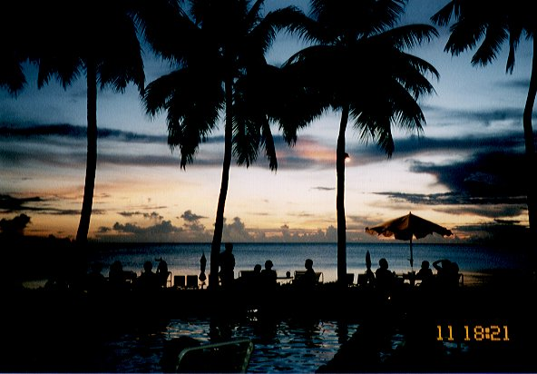
|
サイパンのレンタルシャック同様、パラオの「レンタルシャック」も、
多くの局に楽しんでもらえるためにはメンテナンスには十分に対応出来る体制が必要だが、
パラオ諸島はサイパン、グアムに比べて航空便数が少ないのが難点。 サイパンのレンタルシャックはホテル改装のため2004年で閉鎖されたが、 2001年に東マレーシア(9M6)の首都コタキナバルに新たに「レンタルシャック」が設置され、 現在(2006年夏)もパラオ同様にJA局に開放されている。 |
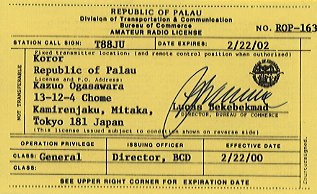